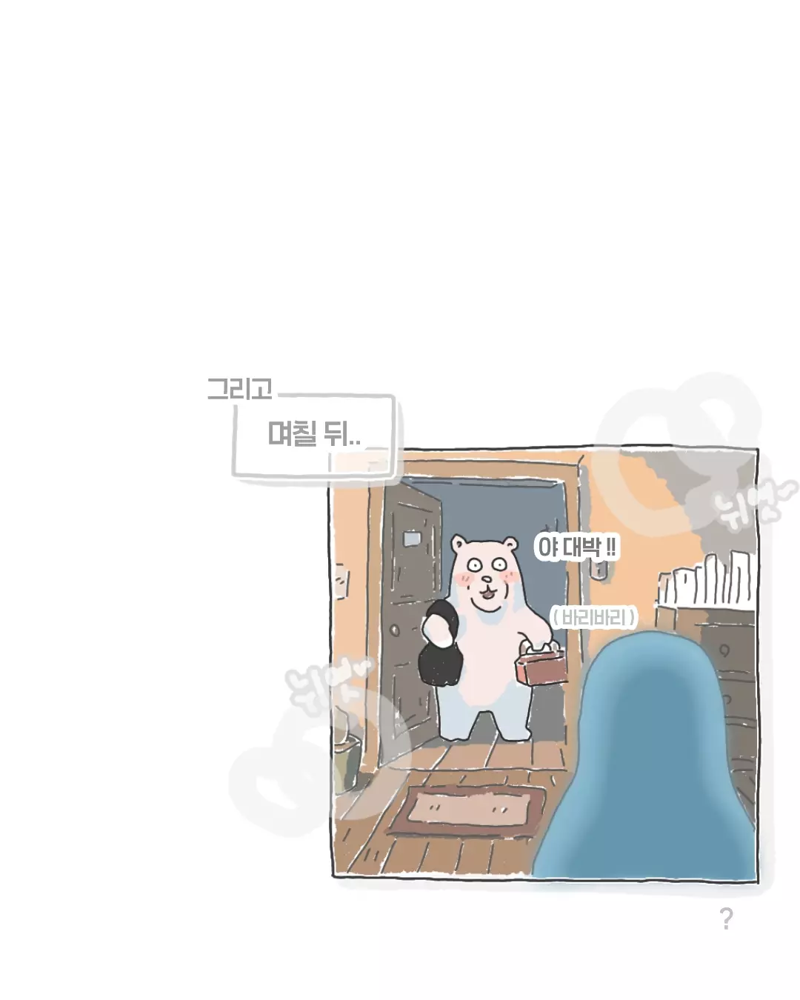

밥 대신 라면을 먹고 살아도 젊어서 고생이라 토닥이고 말텐데 김치가 없어 못먹는 건 전혀 다른 문제다.
한국인으로서 기본적 인권을 못누리고 사는 거랑 일반. 등짝을 희생해서라도 김치 챙겨다 줘야지. 없으면 사서라도 보내주고.
평생 국산김치는 직접 김치를 담그는 한식당, 국밥집 제외하고는 집김치만 먹다가 자취하고 바쁘면서 본가에 2달 이상 못가는 상황이 발생해 처음으로 마트에서종갓집 김치를 사먹었는데
가판대에서 마주한 첫인상은 "개비싸네"였고
식탁에서 맞이한 첫 입맛은 "값 그 이상이네"였음ㅋㅋ
분식집이나 저질식당에서 먹던 중국산 싸구려 김치가 왜 싸구려 소리를 듣는지 절실하게 느낌
ㄹㅇ 왠만한 40대이상 가정주부는 김치고수와 명인 그사이쯤 되니 그들의입맛을 맟추며 돈을 받으면서 판다? 보통퀄로는 바로망함
종갓집이 맛있었으면 ㄹㅇ 전라도 본토 김치 먹으면 까무러치겠네
전국민이 태어나서 김치 먹어온 김치믈리에들인데 돈받고 팔려면 맛있어야지.
어흐 군침싹도노
고구마순이 ㄹㅇ 씹 밥도둑인데 ㅠㅠ
맞아 근데 고구마순 다듬는게 장난아냐 다 엄마손맛이라는거지 ㅜ
김치 맛있는건 비싸
싼건 그냥 싼맛이나
김치는 중대사지
감옥 가도 김치는 주는데
인류애 만화 ㅊㅊ
김치의 단점이지 이놈의 김치는 만들어 먹어도 비싸 ㅋㅋ 사서 먹으면 더 비싸..
그나마 괜찮은게 깍두기 정도
김치 너무 소중해...
김치 인터넷에서 만얼마면 살수있는거 아니었나
중국산은 내 돈 주고 사먹긴 돈 아까우니까
원래 소고기인가 비싸서 한번도 안먹어봤다 그러니까
사장이 존나쳐먹인거 개조한썰인거같은데
ㅋㅋㅋㅋ 아들같은 놈이 김치가 '비싸서' 먹는다니까 얼마나 마음 미어지겠음
좋은회사당